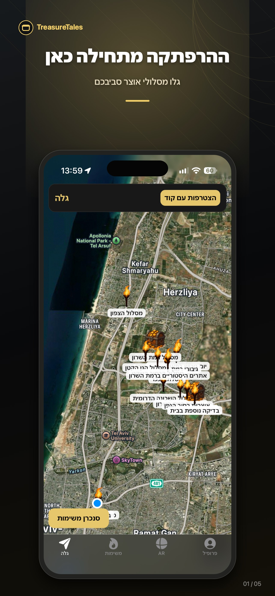
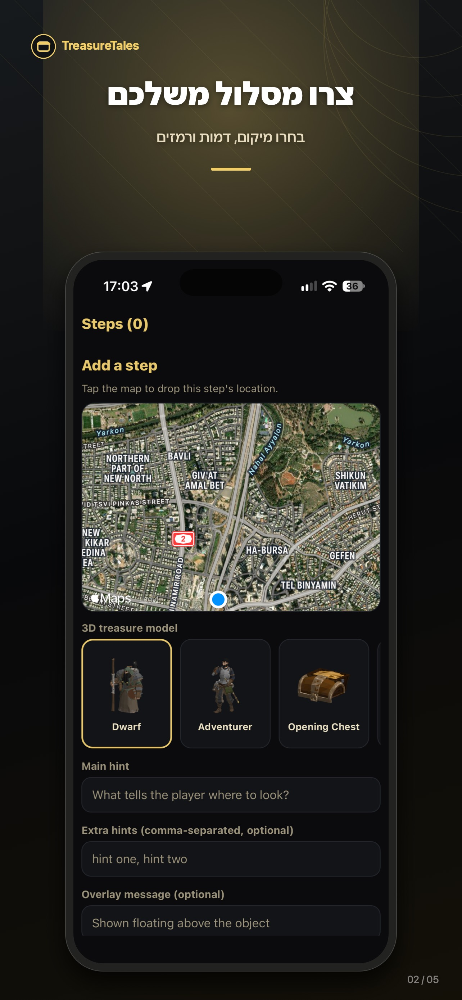
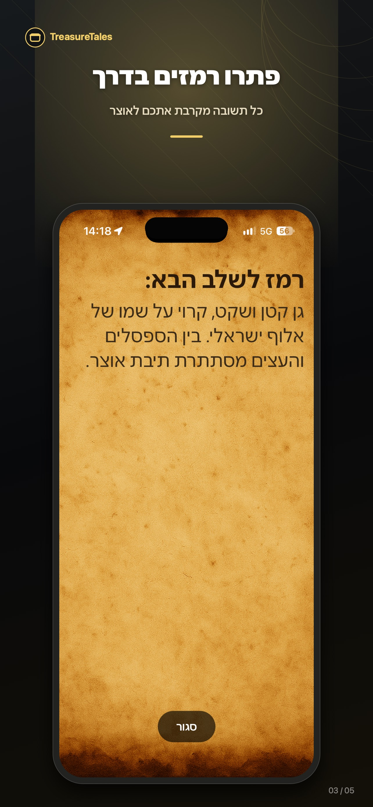

משפחות
צאו למסע בפארק או בשכונה. הילדים מובילים בין התחנות, וכולם משתתפים בפתרון החידות.

המטמון מחכה לכם
מפה, חידות ודמויות במציאות רבודה הופכות כל יציאה להרפתקה למשפחות, לבתי ספר ולימי גיבוש.
✓ נבנה עם בטיחות, פרטיות וחוויה משפחתית במרכז
עקבו אחרי המסלול במפה העתיקה וגלו מה מסתתר מאחורי ה־X.


מי נראה כמו שועל, אבל יכול לעוף בעזרת כנפיים בצורת עלים?

הרמז שלי: לכו לקרחת היער וחפשו עיניים גדולות וקרניים שצומחות מהראש.
הרמז האחרון: חפשו את ה־X ליד שורשי העץ הגדול. שם מחכה האוצר.
פתרתם את החידות והגעתם לתיבה.
צאו למסע בפארק או בשכונה. הילדים מובילים בין התחנות, וכולם משתתפים בפתרון החידות.
בנו מסלול בחצר או בטיול כיתתי, עם חידות שמתאימות לנושא הלימוד ותחנות לפעילות בקבוצות.
חלקו את המשתתפים לקבוצות, שתפו קוד למסלול ותנו לכל צוות לפתור את הרמזים יחד עד האוצר.
הרפתקה בשלושה צעדים
בחרו מסע, פתרו את הרמזים וגלו מה מחכה לכם בתחנה הבאה.
מוצאים מסלול על המפה או מצטרפים למסע פרטי באמצעות קוד.
מגיעים לתחנות, קוראים את הרמזים ומסתכלים אחרת על העולם סביבכם.
פוגשים דמויות ב־AR ומשלימים את הסיפור עד לרגע הגילוי.
הצצה לאפליקציה
כל המסע, בעיצוב אחד פשוט וברור.





יותר ממשחק
גלו מסלולי ציד אוצרות על המפה וצאו לדרך.
כל תחנה חושפת רמז חדש ומקרבת אתכם לאוצר.
פגשו דמויות תלת־ממד בעולם האמיתי דרך המצלמה.
בנו מסלול משלכם והזמינו משפחה וחברים באמצעות קוד.